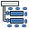

Moduł szkicu (draft) jest w czasie tworzenie i jest dość eksperymentalnym modułem stworzonym by dodać bazową funkcjonalność rysunku 2D do FreeCADa. Napisano go w pythonie - przeznaczony jest także do ukazania jak bardzo można rozwinąć FreeCADa w samym pythonie, bez dotykania kodu źródłowego.
Contents
Rysowanie obiektów
Narzędzia do tworzenia obiektów.
-
 Dwupunktowa linia: Rysuje odcinek pomiędzy dwoma punktami
Dwupunktowa linia: Rysuje odcinek pomiędzy dwoma punktami -
 wielopunktowa linia (Polilinia): Rysuje łamaną składającą się z wielu odcinków (pomiędzy wieloma punktami)
wielopunktowa linia (Polilinia): Rysuje łamaną składającą się z wielu odcinków (pomiędzy wieloma punktami) -
 Okrąg: Rysuje okrąg bazując na środku i promieniu
Okrąg: Rysuje okrąg bazując na środku i promieniu -
 Łuk: rysuje łuk na bazie środka, promienia, kąta początkowego i kąta końcowego
Łuk: rysuje łuk na bazie środka, promienia, kąta początkowego i kąta końcowego -
 Ellipse: Draws an ellipse from two corner points
Ellipse: Draws an ellipse from two corner points -
 Polygon: Draws a regular polygon from a center and a radius
Polygon: Draws a regular polygon from a center and a radius -
 Prostokąt: Rysuje prostokąt na bazie dwóch przeciwległych punktów
Prostokąt: Rysuje prostokąt na bazie dwóch przeciwległych punktów -
 Tekst: Rysuje wieloliniową adnotację tekstową
Tekst: Rysuje wieloliniową adnotację tekstową -
 Wymiar: Rysuje linię wymiarową
Wymiar: Rysuje linię wymiarową -
 BSpline: Draws a B-Spline from a series of points
BSpline: Draws a B-Spline from a series of points -
 Point: Inserts a point object
Point: Inserts a point object - ShapeString: The ShapeString tool inserts a compound shape representing a text string at a given point in the current document
-
 Facebinder: Creates a new object from selected faces on existing objects
Facebinder: Creates a new object from selected faces on existing objects -
 Draft_BezCurve/plBezier Curve: Draws a Bezier curve from a series of points
Draft_BezCurve/plBezier Curve: Draws a Bezier curve from a series of points -
 Label: Places a label with an arrow pointing to a selected element Dostępne w wersji 0.17
Label: Places a label with an arrow pointing to a selected element Dostępne w wersji 0.17
{kind=link}
Modyfikowanie obiektów
Narzędzia do modyfikacji istniejących obiektów. Pracują na zaznaczonych obiektach, jeśli żaden nie jest zaznaczony, zostaniesz poproszony o zaznaczenie.
-
 Przesuń: Przesuwa obiekty z jednego miejsca do drugiego
Przesuń: Przesuwa obiekty z jednego miejsca do drugiego - Obróć: Obraca obiekty od kąta początkowego do końcowego
-
 Odsuń: Przenosi segmenty obiektu o określoną odległość
Odsuń: Przenosi segmenty obiektu o określoną odległość -
 Przytnij/Wydłuż (Trimex): Przycina lub wydłuża obiekt
Przytnij/Wydłuż (Trimex): Przycina lub wydłuża obiekt -
 Upgrade: Łączy obiekty do obiektu wyższego poziomu
Upgrade: Łączy obiekty do obiektu wyższego poziomu - Downgrade: Rozbija obiekt na obiekty niższego poziomu
-
 Skaluj: Skaluje zaznaczone obiekty wokół punktu bazowego
Skaluj: Skaluje zaznaczone obiekty wokół punktu bazowego -
 Drawing: Writes selected objects to a Drawing sheet
Drawing: Writes selected objects to a Drawing sheet -
 Edit: Edits a selected object
Edit: Edits a selected object -
 Wire to BSpline: Converts a wire to a BSpline and vice-versa
Wire to BSpline: Converts a wire to a BSpline and vice-versa -
 Add point: Adds a point to a wire or BSpline
Add point: Adds a point to a wire or BSpline -
 Delete point: Deletes a point from a wire or BSpline
Delete point: Deletes a point from a wire or BSpline -
 Shape 2D View: Creates a 2D object which is a flattened 2D view of another 3D object
Shape 2D View: Creates a 2D object which is a flattened 2D view of another 3D object -
 Draft to Sketch: Converts a Draft object to Sketch and vice-versa
Draft to Sketch: Converts a Draft object to Sketch and vice-versa -
 Array: Creates a polar or rectangular array from selected objects
Array: Creates a polar or rectangular array from selected objects -
 Path Array: Creates an array of objects by placing the copies along a path
Path Array: Creates an array of objects by placing the copies along a path -
 Clone: Clones the selected objects
Clone: Clones the selected objects -
 Mirror: Mirrors the selected objects
Mirror: Mirrors the selected objects -
 Stretch: Stretches the selected objects Dostępne w wersji 0.17
Stretch: Stretches the selected objects Dostępne w wersji 0.17
{kind=link}
{kind=link}
Ustawienia pracy
Narzędzia konfigurujące twoje środowisko robocze.
-
 Płaszczyzna robocza: Ustawia płaszczyznę roboczą dla kolejnych operacji
Płaszczyzna robocza: Ustawia płaszczyznę roboczą dla kolejnych operacji -
 Finish line: Ends the drawing of the current wire or bspline, without closing it
Finish line: Ends the drawing of the current wire or bspline, without closing it - Close line: Ends the drawing of the current wire or bspline, and closes it
-
 Undo line: Undoes the last segment of a line
Undo line: Undoes the last segment of a line -
 Toggle construction mode: Toggles the Draft construction mode on/off
Toggle construction mode: Toggles the Draft construction mode on/off -
 Toggle continue mode: Toggles the Draft continue mode on/off
Toggle continue mode: Toggles the Draft continue mode on/off -
 Zastosuj styl: Zastosowuje aktualny kolor i grubość linii do obiektu
Zastosuj styl: Zastosowuje aktualny kolor i grubość linii do obiektu -
 Toggle display mode: Switches the display mode of selected objects between "flat lines" and "wireframe"
Toggle display mode: Switches the display mode of selected objects between "flat lines" and "wireframe" -
 Add to group: Quickly adds selected objects to an existing group
Add to group: Quickly adds selected objects to an existing group -  Select group contents: Selects the contents of a selected group
-
 Toggle snap: Toggles object snapping on/off
Toggle snap: Toggles object snapping on/off -
 Toggle grid: Toggles the grid on/off
Toggle grid: Toggles the grid on/off -
 Show snap bar: Shows/hides the snapping toolbar
Show snap bar: Shows/hides the snapping toolbar -
 Heal: Heals problematic Draft objects found in very old files
Heal: Heals problematic Draft objects found in very old files -
 Flip Dimension: Flips the orientation of the text of a dimension
Flip Dimension: Flips the orientation of the text of a dimension -
 VisGroup: Creates a VisGroup in the current document
VisGroup: Creates a VisGroup in the current document - Slope: Changes the slope of selected Lines or Wires Dostępne w wersji 0.17
{kind=link}
{kind=link}
{kind=link}
-
 AutoGroup: Automatically place new objects in a given group Dostępne w wersji 0.17
AutoGroup: Automatically place new objects in a given group Dostępne w wersji 0.17
-
 Set Working Plane Proxy: Add a proxy object in the document to store a Working Plane position Dostępne w wersji 0.17
Set Working Plane Proxy: Add a proxy object in the document to store a Working Plane position Dostępne w wersji 0.17
- Add to Construction group: Add selected objects to the Construction group Dostępne w wersji 0.17
Preferencias
-
 Preferencje ...: Preferencje są jednorazowe w Narzędziach roboczych.
Preferencje ...: Preferencje są jednorazowe w Narzędziach roboczych.
Importowanie i eksportowanie
Obecne są funkcję otwierające, importujące lub eksportujące inne formaty plików. Otwarcie następuje w nowym dokumencie z zawartością pliku, podczas gdy import załącza zawartość pliku do aktualnego dokumentu. Eksport zapisuje do pliku wybrane obiekty. Jeśli niczego nie zaznaczono wszystkie obiekty zastaną wyeksportowane. Bądź świadom, że moduł Szkicu (Draft) jest przeznaczony do pracy z obiektami 2d i jego importery skupiają się tylko na obiektach 2d i, pomimo że formaty DXF i OCA wspierają definicje obiektów w przestrzeni 3d, nie pozwalają one na import objętościowych obiektów jak siatki, powierzchnie 3D itp., tylko importują linie, okręgi, teksty lub płaskie kształty. Obecnie wspierane formaty plików:
-
 Preference ... Import Export
Preference ... Import Export
- Autodesk .DXF: Importuje i eksportuje pliki DXF stworzone w innych aplikacjach
- SVG (jako geometria): Importuje i eksportuje pliki SVG stworzone w aplikacjach do grafiki wektorowej
- format Open Cad .OCA: Importuje i eksportuje pliki OCA/GCAD potencjalnie nowego otwartego formatu CAD
Zwykłe zachowanie
- Przyciąganie (Snapping): Pozwala umieszczać nowe punkty na specjalnych miejscach istniejących obiektów
- Ograniczanie (Constraining): Pozwala na umieszczenie nowych punktów poziomo lub pionowo w odniesieniu do poprzednich
- Praca z ręcznymi współrzędnymi: Pozwala wprowadzić współrzędne manualnie zamiast klikanie na ekranie
- Kopiowanie (Copying): Wszystkie narzędzia modyfikacji mogą też modyfikować lub tworzyć zmodyfikowane kopie zaznaczonych obiektów. Podczas użycia narzędzia naciśnij ALT by stworzyć kopię.
- Tryb konstrukcji (Construction): Pozwala wstawić geometrię niezależnie od reszty dla łatwego włączenia/wyłączenia
- Wszystkie nowo stworzone obiekty przyjmują kolor i szerokość aktualnego Szkicu (Draft)
API
Zajrzyj do strony API Szkicu by uzyskać kompletny opis funkcji Szkicu których możesz użyć w skryptach i makrach.